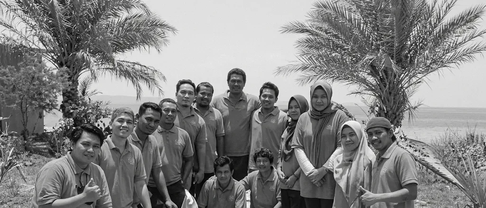
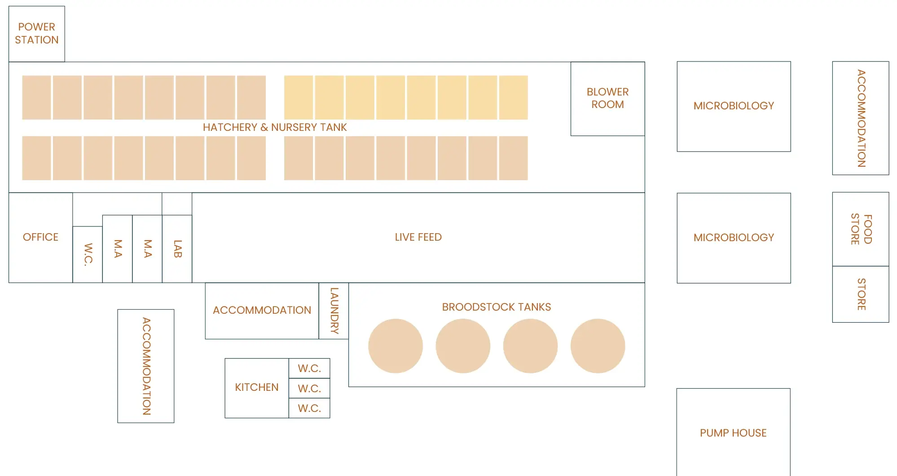

Assets Under Management —
Balghailam Island
Instead of scaling vertically or chasing complexity, we’ve built a system aligned with nature — focused on fish health, biosecurity, and operational reliability. Compact, efficient, and replicable — our facility is a model for sustainable marine hatcheries in the region.
Systems That
Support People
Dry Lab & Traceability Systems
Supports planning and analytics, integrated with SFS Trace to track fish from broodstock to harvest.
Staff Facilities
Dedicated spaces for welfare, training, and teamwork — helping ensure consistent operations and a healthy working environment.

Key Stats
- 6,000 m² of hatchery space
- Dedicated rooms for live feed and algae production
- Integrated RAS & flow-through systems
- Automated filtration, UV sterilisation, and real-time water quality sensors
- Biosecure broodstock housing and spawning zones
- Modular nursery capacity for phased growth
- Fully equipped lab for water quality and microbiology
Hatchery infrastructure
The hatchery is equipped with fully integrated systems that support each life stage of marine finfish, ensuring optimal conditions from broodstock to juvenile.
Broodstock Management
Four 20 m³ tanks hold genetically diverse broodstock, conditioned for Gulf waters. Climate-controlled rooms support consistent spawning, including off-season cycles.
Larval Rearing Systems
Eight 10 m³ tanks provide stable environments for early-stage development — ensuring strong survival, growth, and low-stress rearing.
Nursery Operations
Twenty-four 10 m³ tanks prepare juveniles for sea cages, with minimal handling and high health standards maintained throughout.
Sustainable feed systems
Live Feed Production
Three 2 m³ tanks produce rotifers and copepods — essential natural feed that supports high survival and early growth.
Algae Cultivation
Eight outdoor tanks grow Nannochloropsis sp., forming the foundation of our live feed system and supporting fish health from the start.
Laboratories and diagnostics
Water Quality & Microbiology Labs
Our on-site lab monitors water quality and fish health. Two functional areas track key parameters and identify pathogens early.
Microbial Testing Capabilities Include:
- CFU counts
- Microbial cultivation
- Wet mounts
- Antibiograms for treatment guidance
Site layout
Hatchery & nursery tanks, live feed, broodstock tanks, microbiology labs and support buildings.

Interested in Balghailam Island?
Government, research and commercial partners are welcome to get in touch about collaboration and site visits.